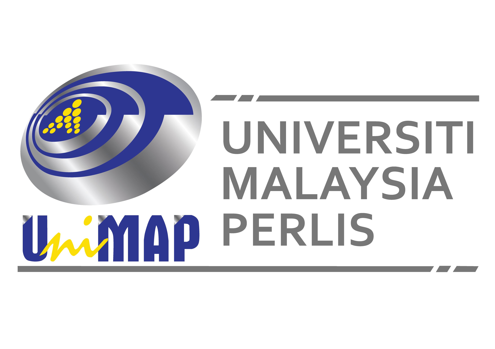

Communication in Scientific Inquiry involves the exchange of ideas, dissemination of research findings, and collaboration among scientists, educators, and the broader community. It plays a critical role in advancing knowledge, fostering innovation, and addressing complex global challenges particularly in Technology and Digital Platforms. Advances in technology have transformed how we communicate. Digital platforms, social media, and online databases enable rapid sharing of information, broader outreach, and more interactive forms of communication.
IoT – Transformative Technological Phenomena in the 21st Century
9-11 July 2018
Copthorne Orchid Hotel, Penang
Embracing Digital Communicative Technology in Futurizing Education in Post Pandemic Classrooms
30 March 2021
Webex Online Conference
IoT - Transformative Technological Phenomena in the 21st Century
15 December 2022
Hybrid @ Universitas
Muhammadiyah Sumatera Utara (UMSU) in Medan,
Indonesia.
The AI Paradigm Shift: Towards Education and Communication Excellence
3-4 December 2024
Borneo Cultures Museum (BCM),
Kuching Sarawak